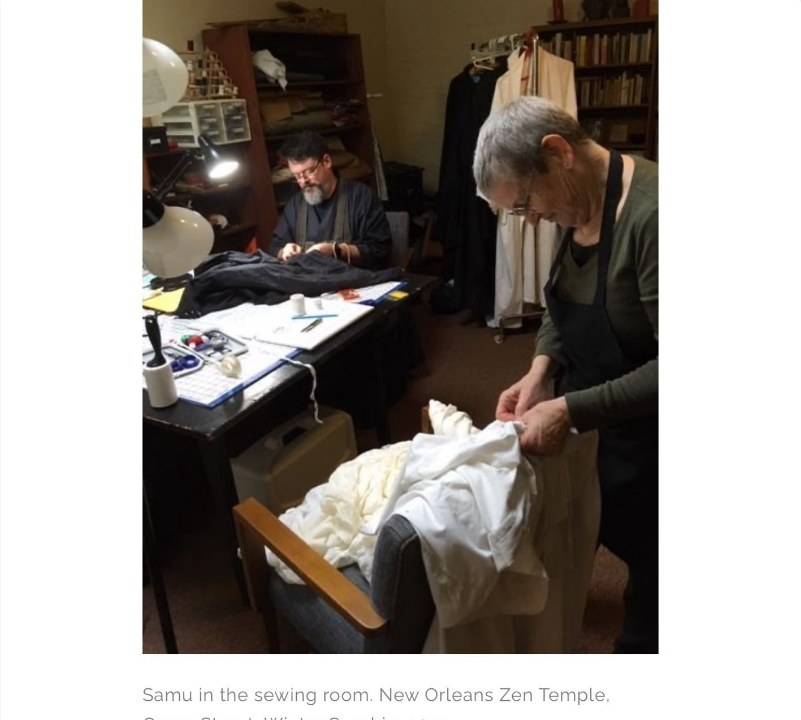
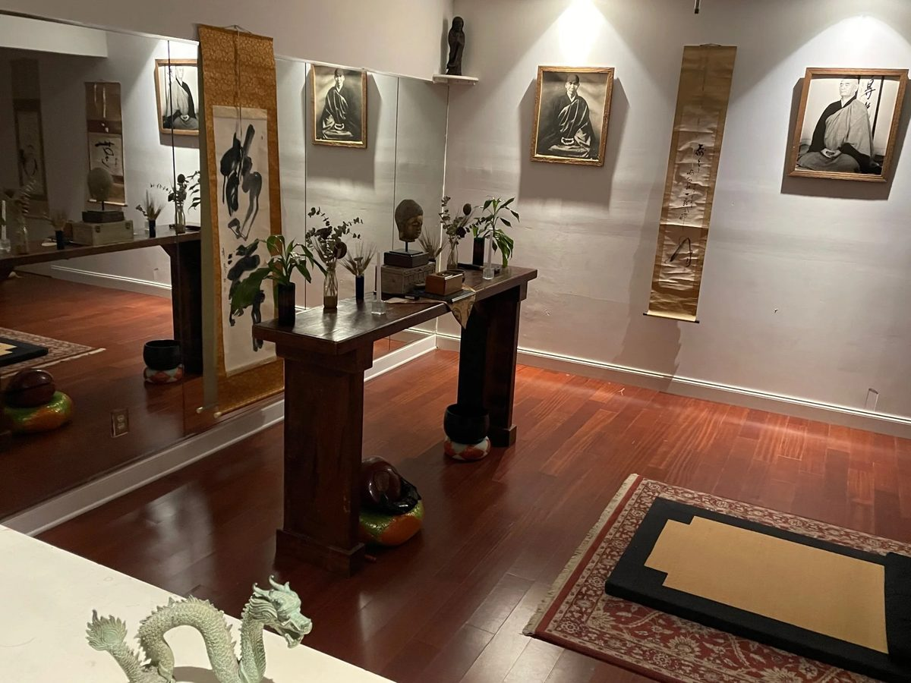

Our History
About the Temple
Muhozan Kōzenji — Peakless Mountain, Shoreless River Temple — was founded in 1983 by Robert Livingston Roshi (1933–2021) to provide instruction in true Zen practice for New Orleans and the region.
The temple maintained a sitting and retreat schedule from its first location in a small uptown home, before settling into the historic building at 748 Camp Street in 1991 — built in 1831, once the site of Cosimo Matassa's Jazz City recording studio. For thirty years, those who wanted a taste of Zen climbed those slate and heart pine stairs.
After Robert Livingston's death in early 2021, the Temple relocated to 3600 Napoleon Avenue in Broadmoor, then closed that location September 18, 2022. On January 1, 2023, the New Orleans Zen Temple reopened at 8338 Oak Street, second floor, above Yes, Yoga.
Stone Nest Dojo in Sewanee, Tennessee opened in April 2023 as the residence and teaching base of Abbot Richard Collins, who returns to New Orleans periodically. The Temple is overseen by the American Zen Association, a 501(c)(3) nonprofit incorporated in Louisiana.
Current Management
- Richard Reishin Collins — Abbot
- Preston Thomas — bio and role to be confirmed
- Jeff Cantin — Board Member, American Zen Association



